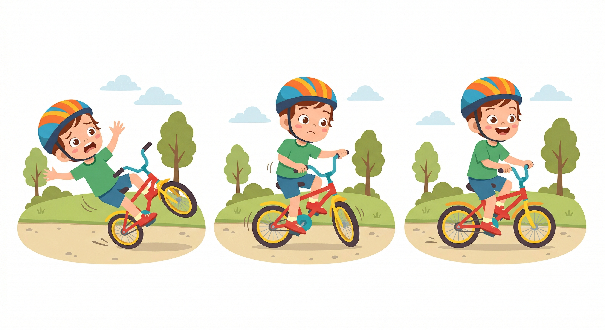
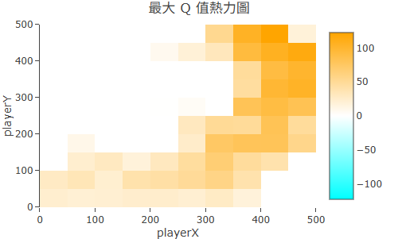

想一想，你是怎麼學會騎腳踏車的？
沒有人告訴你「左腳施力 40%、右腳 35%、上半身前傾 12 度」。你坐上去，搖晃，差點摔倒，下意識把重心移回來，稍微成功一點點——然後再試，再調整。 幾十次之後，你突然就「會了」。
沒有課本，沒有標準答案，只有一次次嘗試帶來的回饋：摔倒（懲罰）或保持平衡（獎勵）。這個學習過程，就是強化學習的核心邏輯。
強化學習由四個要素組成，它們構成一個持續循環的互動過程：
| 角色 | 說明 | 騎腳踏車的比喻 |
|---|---|---|
| Agent（行動者） | 做決策、採取行動的主體 | 正在學騎車的你 |
| Environment（環境） | Agent 所在的世界，接受動作並給予回應 | 腳踏車、地面、重力 |
| State（狀態） | Agent 觀察到的當前情況 | 身體目前的傾斜角度與速度 |
| Reward（獎勵） | 環境給 Agent 的回饋訊號，正值是獎勵，負值是懲罰 | 保持平衡（+）或摔倒（−） |
這個循環不斷重複：Agent 觀察 State → 選擇 Action → Environment 回傳 Reward 和新 State → 重複。每一輪循環，Agent 都在從結果中累積經驗，慢慢調整自己的策略。
給 AI 大量「輸入 + 正確答案」的配對資料，讓它學習對應規律。
例子：圖片辨識——輸入貓的照片，正確答案是「貓」
特點：需要人工標注大量資料，不適合「答案難以定義」的任務
給 AI 大量資料，讓它自己找出資料中的規律或結構，沒有預設答案。
例子：顧客分群——找出消費行為相似的族群
特點：探索資料結構，但不知道「對不對」
讓 AI 在環境中互動，靠 Reward 訊號自己摸索出好的行為策略。
例子：學下棋——靠贏棋（正 Reward）與輸棋（負 Reward）來學習
特點：不需要標注答案，但需要定義 Reward 規則
強化學習的數學基礎叫「馬可夫決策過程」（Markov Decision Process，MDP）。 它有一個重要假設，用一句話說：
這個假設讓計算變得可行。如果 Agent 每次決策都要回顧所有歷史，計算量會爆炸。 MDP 的假設幫助我們把複雜問題簡化成「當下狀態 → 行動 → 新狀態」的反覆迭代。
以 Maze2D（二維迷宮）為例，把抽象概念對應到你在平台上看到的東西：
| RL 角色 | 在 Maze2D 裡是... |
|---|---|
| Agent | 在迷宮裡移動的藍色圓點 |
| Environment | 迷宮地圖本身——它接受 Agent 的移動指令，更新位置，判斷是否到達終點或撞牆 |
| State | Agent 目前在迷宮中的格子座標（x, y） |
| Reward | 抵達終點給大正值，撞牆或超時給負值，平常移動給小負值（鼓勵快速到達） |
| Action | 上、下、左、右四個移動方向 |
每一個訓練回合：Agent 從起點出發，根據當前座標選擇方向，移動後收到 Reward，再根據新座標繼續選擇——直到到達終點或超過步數上限。
大多數 AI 的「學習成果」藏在幾千萬個神經網路參數裡，完全看不懂。 Q-Learning 不一樣——它把學習結果存在一張叫 Q-Table 的表格裡。
Q-Table 的每一格記錄的是：「在這個狀態下，採取這個動作，長期來看能拿到多少 Reward？」 訓練越久，這張表格就越精準。
Rein Room 的「分析」分頁把 Q-Table 轉成 熱力圖：顏色越亮的位置，代表 Agent 認為越有價值。 在 Maze2D 裡，你會看到終點附近明亮、死路暗沉——這就是 Agent 一步步試出來的「世界地圖」。

Maze2D 的 Q-Table 熱力圖：亮色代表 Agent 認為高價值的位置